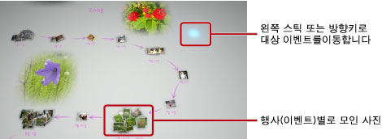

사진 보기
포토갤러리를 기동하면 PS3™에 저장된 모든 사진이 자동으로 행사(이벤트)별로 모여 표시됩니다. 이벤트는 사진 촬영 시간으로 구별됩니다.
이벤트 및 사진 선택하기
왼쪽 스틱 또는 방향키로 사진 간, 이벤트 간을 이동합니다.  버튼을 누르면 복수의 이벤트 및 사진을 선택할 수 있습니다.
버튼을 누르면 복수의 이벤트 및 사진을 선택할 수 있습니다.

표시 방법 전환하기
이벤트를 선택한 후  버튼을 누르면 사진의 표시 방법이 바뀝니다.
버튼을 누르면 사진의 표시 방법이 바뀝니다.
알아두기
사진을 풀 화면으로 표시하고 있을 때  버튼을 누르면 XMB™
버튼을 누르면 XMB™  (사진)의 제어판이 표시됩니다. 포토갤러리에서는 조작할 수 있는 항목이 제한됩니다.
(사진)의 제어판이 표시됩니다. 포토갤러리에서는 조작할 수 있는 항목이 제한됩니다.
슬라이드 쇼로 사진 보기
라이브러리 영역의 이벤트 및 재생 목록을 선택한 후 버튼을 눌러  (슬라이드 쇼)를 선택합니다.
(슬라이드 쇼)를 선택합니다.
표시된 화면에서 다음을 설정한 후 [시작]을 선택합니다.
| 슬라이드 쇼 스타일 | 슬라이드 쇼의 표시 패턴을 선택합니다. |
|---|---|
| 슬라이드 쇼 속도 | 슬라이드 쇼의 속도를 선택합니다. |
| 정렬 | 사진의 표시 순서를 선택합니다. |
| 슬라이드 쇼 배경음악 | 슬라이드 쇼의 배경음악을 포토갤러리에 수록되어 있는 곡 중에서 선택합니다. |
 |
슬라이드 쇼의 배경음악을 XMB™의  (음악)에서 선택합니다. (음악)에서 선택합니다. |
알아두기
- 슬라이드 쇼를 하고 있을 때 버튼을 누르면 XMB™ (사진)의 제어판이 표시됩니다.
- 라이브러리 영역에서 사진을 표시하고 있을 때는 [정렬]에서 [유사성]을 선택할 수 있습니다.
배경음악 변경하기
포토갤러리에서 배경음악으로 흘러 나오는 음악을 변경하고자 할 때는 무선 컨트롤러의 PS 버튼을 눌러 XMB™(크로스 미디어 바)를 표시하여 (음악)에서 변경할 음악 파일을 선택합니다.
알아두기
- 슬라이드 쇼의 배경음악을 변경할 때는 슬라이드 쇼를 시작하기 전에 표시되는 설정 화면에서 변경해 주십시오.
- 배경음악을 기록 미디어에 저장되어 있는 음악으로 변경한 후 슬라이드 쇼를 시작하면 슬라이드 쇼 종료 후에 해당 트랙이 재생되지 않는 경우가 있습니다.